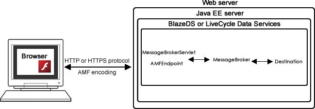

Flash Remoting¶
Flash Remoting is a combination of client and server-side functionality that together provides a call-and-response model for accessing server-side objects from Flash Platform applications as if they were local objects. It provides transparent data transfer between ActionScript and server-side data types, handling the serialization into Action Message Format (AMF), deserialization, and data marshaling between the client and the server.
Flash Remoting uses client-side functionality built in to Flash Player and server-side functionality that is built in to some servers (like ColdFusion and Zend) but must be installed on other servers (as BlazeDS or LiveCycle Data Services on Java EE servers, WebORB or FluorineFX on .NET servers, the Zend framework or amfphp on PHP servers, and more). See the technologies for building Flex and Java applications article for more details about BlazeDS and LiveCycle Data Services.
BlazeDS and LiveCycle Data Services use a message-based framework to send data back and forth between the client and server. They provide Remoting, Proxying, and Messaging services, and for LiveCycle, an additional Data Management service. The Flex application sends a request to the server and the request is routed to an endpoint on the server. From the endpoint, the request is passed to the MessageBroker, the BlazeDS and LiveCycle Data Services engine that handles all the requests and routes them through a chain of Java objects to the destination, the Java class with the method to invoke (see Figure 3).
Figure 3. Flash Remoting architecture.